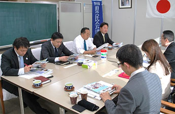
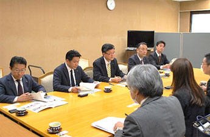
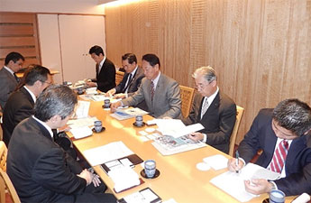
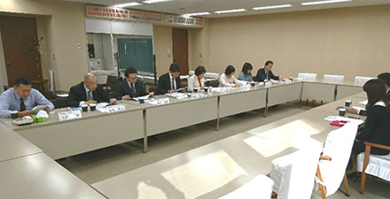
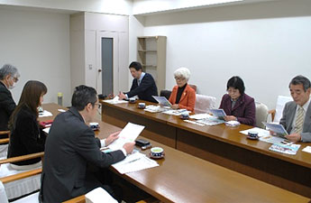
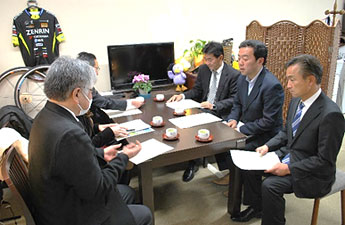

埼玉県議会各会派の皆様と懇談しました
埼玉県生協連は、さいたまの生協の活動や取り組みとくらしの願いを伝える機会として、埼玉県議会の各会派の皆様との懇談会をおこなっています。（開催順に掲載しています）
懇談では、はじめに岩岡会長理事より｢県生協連の活動として会員生協・会員生協の事業状況や組合員数等について｣｢県政要望として消費者契約法の一部改定問題・子どもの貧困・フードバンク・災害対策｣等を紹介し、その後、意見交換しました。
埼玉県議会無所属県民会議の皆様との懇談会
- 【日 時】
- 12月5日(火)13：30～14：15 埼玉県県議会無所属県民会議控室
- 【出席者】
- 無所属県民会議：鈴木正人代表、醍醐清県議、石川忠義県議、井上航県議
埼玉県生協連：岩岡会長理事、大久保常務理事、今野(事務局)
【懇 談】(抜粋)
○消費者契約法のつけ込み型が入らなかった背景は何か
→認知症をどうやって判断するかが障害になったと聞き及んでいる。
○県の条例で規制する方法はどうか。
→他の自治体では、訪問販売お断りのシールを貼ったところに訪問することを条例で規制しているところもある。
○北海道のハマナス食品は事業者とコープさっぽろが出資して障がい者雇用を推進する様子を視察した。障がい者雇用に対する生協の考え方について教えてほしい。
→生協の生産・物流施設では障がい者雇用をすすめ、長期間にわたり貢献していただいている。法定雇用率を上回るレベルで推進しており、共同作業所連絡会とは協力協同の関係を構築している。

埼玉県議会公明党議員団の皆様との懇談会
- 【日 時】
- 12月6日(水)13：00～14：00 埼玉県県議会公明党県議団控室
- 【出席者】
- 公明党議員団：西山淳次団長、蒲生徳明県議、萩原一寿県議、権守幸男県議、安藤友貴県議
埼玉県生協連：岩岡会長理事、大久保常務理事、加藤(事務局)
【懇 談】(抜粋)
○組合員数が毎年増えているように思うが、その要因はないか。高齢者の単身世帯が増えてことも要因の1つにあるのか。
→高齢者の単身世帯の方に、夕食宅配も含め便利に利用していただいていることは確かだが、その他の世代でも、各生協が便利に利用できるように工夫をしている。ある生協は、早朝帯の配達実験もし、ニーズに応えようとしている。また、見守りの仕組みも整えられていて、荷物の受け渡しが終わると、無事を知らせるメールが配信されるような仕組みもある。
○子どもの貧困に関わる支援の活動、子ども食堂などへの支援では、どのような取り組みをしているのか。
→フードバンク埼玉に多くの生協が関わり、フードドライブを店舗や生協施設で常時実施したいたり、イベントでもやっている。こうした物品の一部を、子ども食堂でも利用いただいている。他にも、紙おむつなども提供して例がある。

自由民主党県議団役員の皆様との懇談会
- 【日 時】
- 12月11日(月)17：00～19：00 浦和ロイヤルパインズホテル5階｢四季彩｣
- 【出席者】
- 自民党県議団：小島信昭団長、本木茂幹事長、齊藤正明副団長、田村琢実政調会長、新井豪政調副会長
埼玉県生協連：岩岡会長理事、大久保常務理事、大山常務理事、今野・清水(事務局)
【懇 談】(抜粋)
○生協の出資金を利用時に徴収されている。お金がないと生協を利用できないとのイメージがある。
→もともと生協は困窮者、救貧活動をしてきた。高度成長による中流家庭が増加し生協が発展してきたが、今日的には子どもの貧困等の取り組みを展開している。出資金は生協により様々な形態があるが、設備投資等で出資をお願いしているケースもある。
○つけ込み型の契約取り消しについて、善良な事業者が締め出されることは心配だ。また、認知症の認定について、教習所の事業者から大変だとの要望も受けている。
→消費者側からの意見・要望として受け止めてほしい。認知症の認定についても、判定機関が判断すべきだ。今回の消費者契約法改定から漏れると被害を低減できない。

埼玉県議会民進党・無所の会の皆様との懇談会
- 【日 時】
- 12月18日(月)13：30～14：30 埼玉県県議会民進党・無所の会控室
- 【出席者】
- 民進党・無所属の会県議：浅野目義英代表、山根史子県議、江原久美子県議、水村篤弘県議、山本正乃県議、田並尚明県議、井上将勝県議、高木真理県議、木村勇夫県議
埼玉県生協連：岩岡会長理事、大久保常務理事、加藤(事務局)
【懇 談】(抜粋)
○生協としてフードロスを減らす取り組みは何をしているのか。
→配達で袋が破れてしまったお米などを廃棄しないで、活用していただくことをしている。また、フードバンク埼玉に多くの生協が関わり、フードドライブを店舗や生協施設で常時実施するとともに、イベントでもやっている。こうした物品の一部を、子ども食堂でも利用いただいている。他にも、食品ではないが、紙おむつなども提供して例がある。
○フードバンク、子どもの貧困問題に関する取り組みで現在の課題となっていることは何か。
→フードバンク埼玉にとって現在の課題の一つは、物資は集まってくるが、それを整理して流していくための体制が充分でないこと。体制をどのようにつくっていくのかについて論議をおこなっているが、埼玉県からも財政的な支援も含め検討いただきたい。
○消費者安全確保地域協議会については、良いことであるのですすめたい。
→個人情報の扱いの難しさがあり、設置は難しいと言われるところもあるが、埼玉県ではすでに福祉部局のすすめる見守りネットワークがすべての市町村にあり、そんなに難しいことではない。つけこみ型勧誘、不招請勧誘の問題など課題は多い。

日本共産党埼玉県議会議員団の皆様との懇談会
- 【日 時】
- 12月21日(木)14：00～14：45 埼玉県県議会日本共産党県議団控室
- 【出席者】
- 日本共産党埼玉県議会議員団：前原かづえ県議、金子正江県議、秋山文和県議
埼玉県生協連：岩岡会長理事、大久保常務理事、加藤(事務局)
【懇 談】(抜粋)
○フードバンクに関わる活動への支援は具体的に何を望むのか、物資は集まっているのか、必要な人に情報や物資は届いているのか。
→財政的な支援と、フードバンクに関する周知のための広報などがあげられる。流通事業者からの提供、防災備蓄品の更新にともなう提供、常設やイベントでのフードドライブなどで、物資は集まってきている。だが、物資の整理をおこない流していくためのスタッフが不足している状況がある。そうした部分での支援があると良いと考える。また、周知では生活保護受給の手続き窓口でのお知らせなどは、県として関わっていただけるのではないかと思っている。
○オレンジカフェに参加した。元気な時に関わりを持つことが大切だと思った。子ども食堂などでは子どもだけでなく関わる人達が元気になる。こうした取り組みには関わっているのか。空き家対策にもなる。
→指摘のとおりだと思っている。会員生協でも様々な取り組みがされている。支援を受けている人が場面を変えると支援する側にまわり存在する意味を見出すことは重要である。人、地域とのつながりづくりに取り組んでいる。空き家の活用に取り組んでいる生協もある。

埼玉県議会無所属改革の会の皆様との懇談会
- 【日 時】
- 12月21日(木)15：30～16：45 埼玉県県議会無所属改革の会控室
- 【出席者】
- 無所属改革の会県議：中川浩代表、木下博信県議、松坂善浩県議
埼玉県生協連：岩岡会長理事、大久保常務理事、加藤(事務局)
【懇 談】(抜粋)
○移動販売を実施するなど考えておられるのか。インターネットでの注文など便利ではあるが高齢者には馴染めない方もいる。いかに、インターネットなどに頼らず、注文・利用できる仕組みをつくれないか検討したい。
→注文に不慣れな方のお手伝いする組合員による助け合いの活動が一部ではおこなわれている。店舗を持つ生協では、ネットスーパーや店舗から電話による注文でお届けすること、店舗で買い物をしたものを後から届ける仕組みも運用されている。また、移動販売については他県ではおこなわれている。埼玉県ではまだおこなわれていない。
○シルバー人材の力を活かしていきたいとも考えている。何かできないか。
→会員生協はそれぞれ、豊かで安心して暮らせる地域社会づくりに参加している。ご指摘のことを受け止め、取り組みをすすめていきたい。
